Chaque Mô Dulo est unique, pensé comme un objet design au design organique, à la forme arrondie et à l'esthétique fluide.
Conçu avec vous, le projet naît d'une esquisse et évolue jusqu'à prendre sa juste mesure : studio, bureau, résidence principale ou espace de vie minimaliste.
Grâce à sa construction modulaire, un studio de 20 m² peut s'allonger ou se multiplier jusqu'à 75 m². Juxtaposition de modules, volumes évolutifs : un bureau devient gîte, un espace de travail se transforme en maison. Le principe est simple : habiter autrement, dans des espaces restreints optimisés.
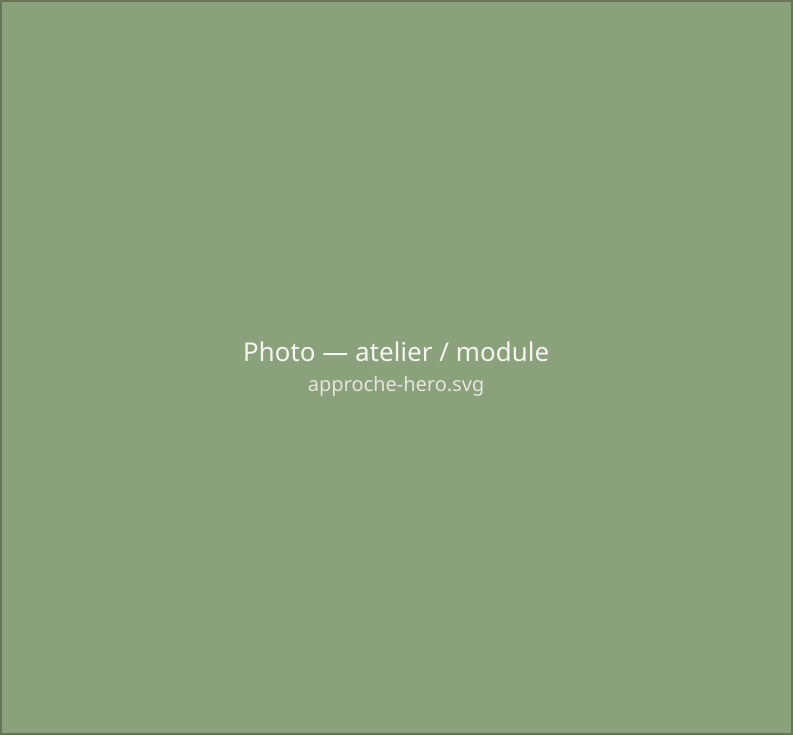
Plus qu'une construction, un habitat écologique et modulaire, pensé comme un vrai projet de vie.
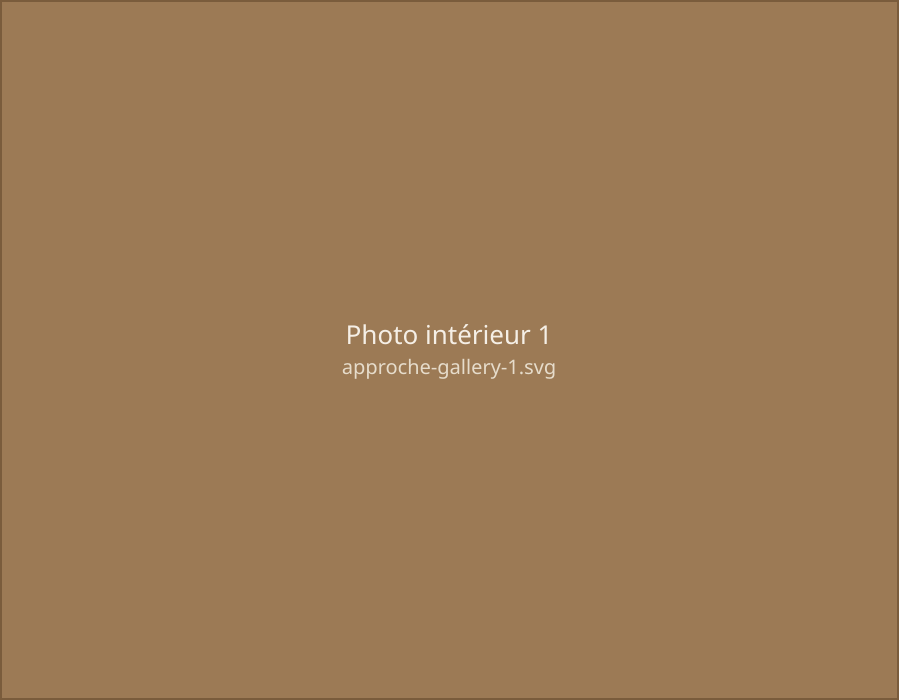
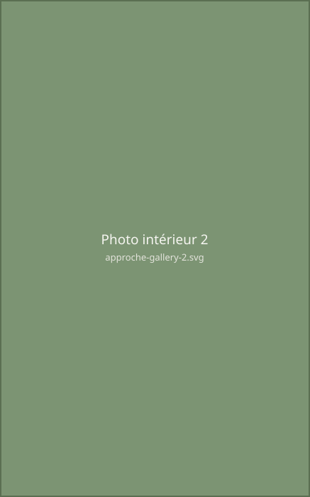
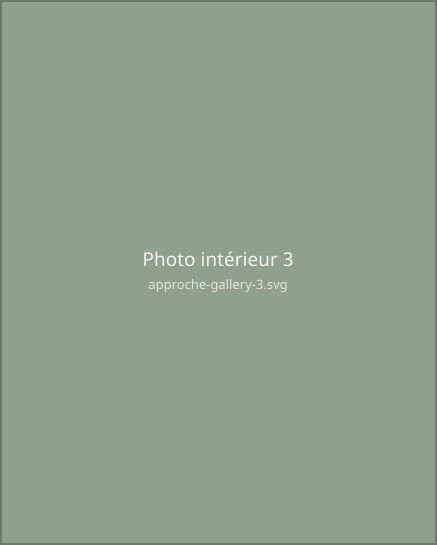
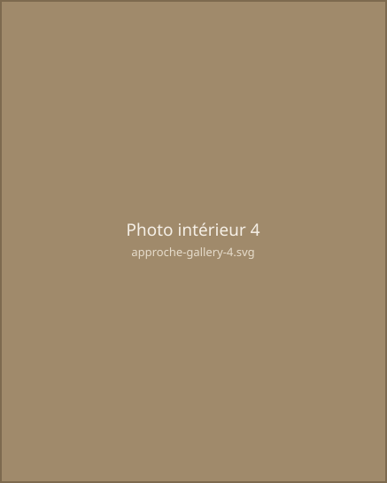
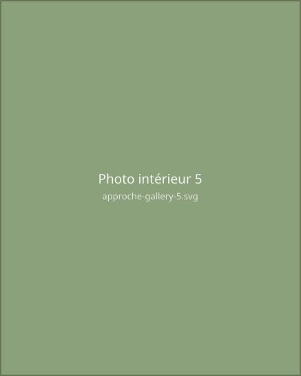
Chaque Mô Dulo est unique, pensé comme un objet design au design organique, à la forme arrondie et à l'esthétique fluide.
Conçu avec vous, le projet naît d'une esquisse et évolue jusqu'à prendre sa juste mesure : studio, bureau, résidence principale ou espace de vie minimaliste.
Grâce à sa construction modulaire, un studio de 20 m² peut s'allonger ou se multiplier jusqu'à 75 m². Juxtaposition de modules, volumes évolutifs : un bureau devient gîte, un espace de travail se transforme en maison. Le principe est simple : habiter autrement, dans des espaces restreints optimisés.
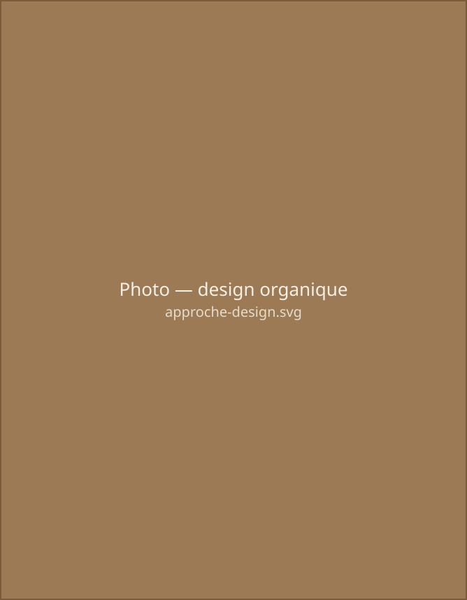
Réalisé en tout bois, fabriqué en atelier et posé sur embase, sans terrassement ni artificialisation des sols, Mô Dulo s'intègre naturellement au paysage. Sa façade vitrée offre une vue panoramique et une connexion permanente avec l'extérieur.
Un chalet bois écologique, sobre et lumineux, pour vivre dehors et dedans en toute simplicité. Le Mô Dulo est le fruit d'un travail collectif et engagé. Il est conçu, fabriqué, équipé et acheminé par un réseau solidaire de huit artisans locaux, tous implantés dans un rayon de moins de 10 kilomètres autour du site de production.
Ce maillage de proximité permet non seulement de garantir une qualité artisanale et un suivi rigoureux à chaque étape de fabrication, mais aussi de soutenir l'économie locale, de réduire l'empreinte carbone liée au transport, et de favoriser des échanges humains riches et durables.
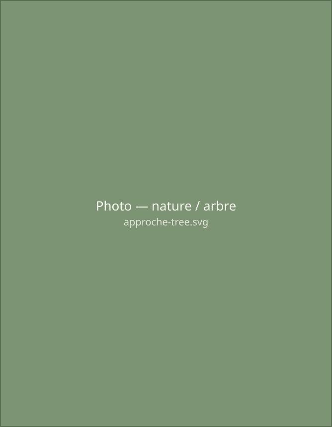
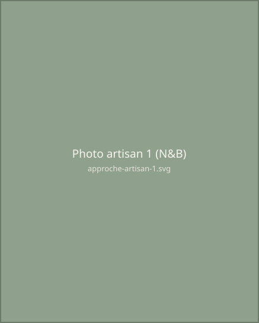
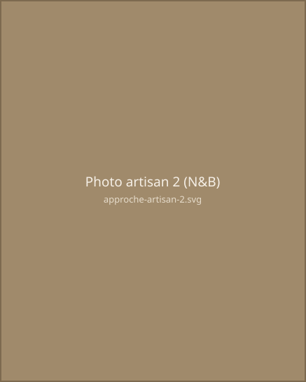
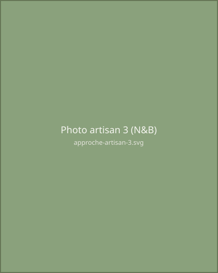